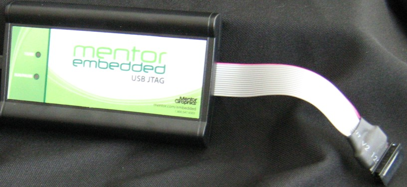
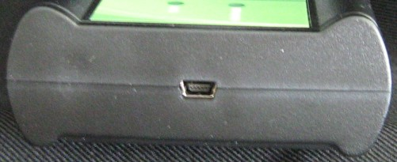

Figure 3‑1 and Figure 3‑2 show the various LEDs and connectors of the probe device.
Figure 3‑1. Sourcery Probe Personal - Top View
Figure 3‑2. Sourcery Probe Personal - End View Showing USB Connector
These topics explain the various LEDs and connectors on the probe device:
The probe hardware has a status LED labeled Run/Pause. It indicates the state of execution on the target device:
The transmit/receive (labeled TX/RX) LED indicates the state of the USB interface:
| Note | |
|
When the probe is powered on, it can perform a brief self-test that displays a test pattern on both LEDs. When the self-test completes, it reverts to the behavior described in this section. |
|